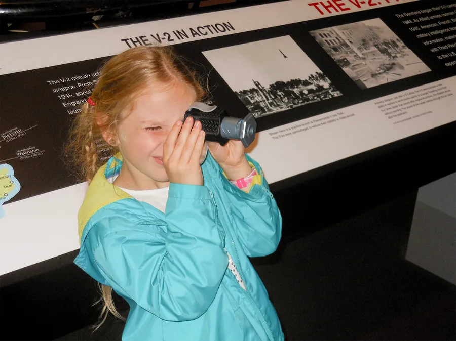
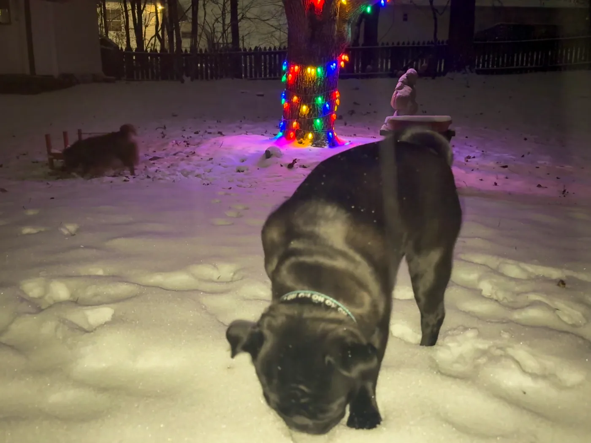

Mia Winchester
graphic design student @ the university of tennessee
I work with type, texture, and color — between editorial,
branding, and experimental web.
Studying graphic design. Open to freelance and collaborations.

Contact
Internships, freelance, and collaborations.